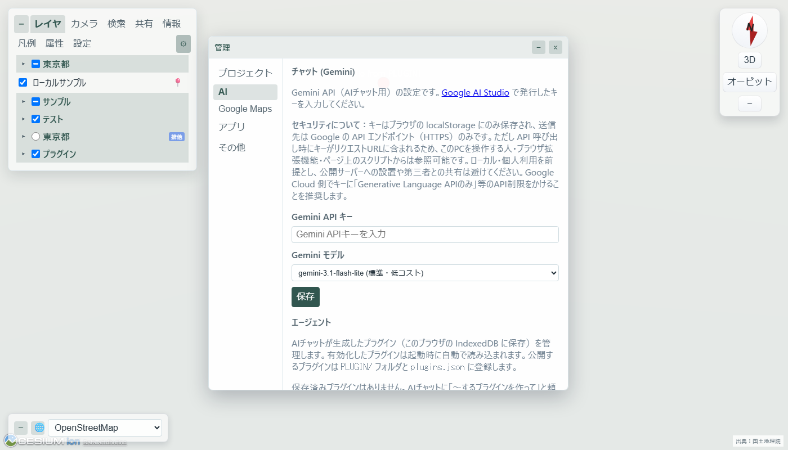
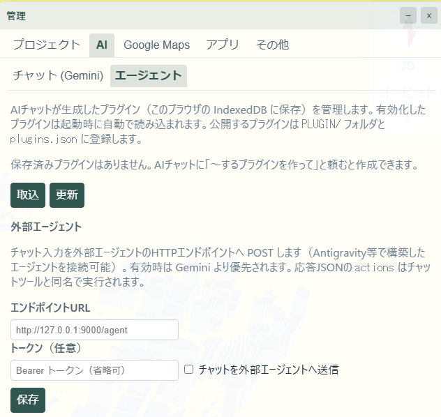

V3: AI 連携
Gemini・OpenAI互換 API（GitHub Models・OpenAI・Ollama 等）・GitHub Copilot・Devin・Antigravity（ブリッジ経由）を使った AI チャットによる地図操作と、ブラウザ内コード実行の基盤です。詳細・設定手順は 【API】内蔵AI（Google 連携・AI） を参照してください（経路ごとの通常版/アプリ版対応は同ページの「AI の利用形態」表を参照）。
通常版とアプリ版の違い：AI チャット本体・地図操作・コード実行・プラグイン生成は両方で使えます。アプリ版（ローカル exe）だけが持つのは /api/fetch・/api/plugins・/api/files などの高権限ツール群と、GitHub Copilot / Devin / Antigravity プロバイダ（専用選択肢はアプリ版のみ表示。起動時にブリッジハブを 127.0.0.1:8511 で待受けさせ、各プロバイダはアプリ内モジュールが必要時に外部 CLI を子プロセス起動（アプリ終了時に全停止）。要各 CLI・本人の認証（Node.js 不要。v6.1 以降は Rust 製アプリ内実装））です。
🗨️ AI チャット（Gemini / OpenAI互換）
管理（⚙）→ AI → チャット で Gemini API キーを登録すると、右下のチャットパネルから自然言語で地図を操作できます。ブラウザから Gemini API を直接呼び出す構成（BYO = Bring Your Own キー方式：各ユーザーが自分の API キーを登録して使う）で、静的配信のまま利用可能です。キーの供給経路は2つあり、BYO キーが無い環境でも、バックエンド（Cloudflare Pages/Workers・Cloud Run）が POST /api/gemini（aiProxy 機能）を通知していればサーバー側のキーでキーレス利用できます。

AI プロバイダは切替式で、選択肢は名前の接頭辞どおり【API】系と【ブリッジ】系の2系統に分かれます。接続先・設定項目・ツール実行方式が系統ごとに異なり、function calling ループ（ツール結果を見て複数往復で判断する本体AIの動作）は【API】系のみが持ちます。
モデル共通の追加指示：管理 → AI → チャット →「追加指示」タブで、Gemini や OpenAI 互換モデルに共通する指示を保存できます。通常はブラウザに保存されます。Cloud Run で KASUGAI_AI_INSTRUCTIONS を設定すると、サーバー側の指示を優先し、内蔵 AI の /api/gemini 経由のリクエストへ適用します。指示文の例は ハッカソン を参照してください。
- 【API】 Gemini（既定）／ OpenAI互換（通常版）— 公式APIへブラウザから直接接続する BYO キー方式。OpenAI互換はGitHub Models（GitHub PAT）・OpenAI・Azure OpenAI・Ollama・LM Studio など chat/completions 互換エンドポイントにベースURL・キー・モデル名を指定して接続します。ツール定義・実行ループは Gemini と共通で、宣言を OpenAI 形式へ変換して送信します
- 【ブリッジ】 GitHub Copilot（V5 アプリ版の機能）— アプリ内実装（GitHub Copilot CLI の stdio サーバーを github-copilot-sdk 経由で駆動・要 Copilot 契約）経由。アプリはブリッジハブ（127.0.0.1:8511）経由で接続するため、プロバイダ選択肢はアプリ版のみに表示されます（要 copilot CLI・Node.js 不要）。選んで保存するだけで疎通したブリッジへ自動接続されます。公式 SDK / CLI によるプログラム接続を利用します
- 【ブリッジ】 Devin（V5 アプリ版の機能）— アプリ内の Devin ブリッジが公式の
devin acpを駆動します。アプリのブリッジハブ（127.0.0.1:8511）が Devin 選択時にのみ起動し、本人の ACP 認証（ブラウザ認証または API キー）と利用枠でモデルを利用します。専用プロバイダはアプリ版のみ表示され - 【ブリッジ】 Antigravity（V5 アプリ版の機能）— アプリ内の Antigravity ブリッジが Antigravity CLI（
agy）の headless 実行（stream-json）を駆動します。アプリのブリッジハブ（127.0.0.1:8511）が Antigravity 選択時にのみ起動し、ブリッジがagy mcp addで地図ツールを登録・permissions.allowにmcp(kasugai/*)を追加します。本人の Google アカウントでの agy ログインと利用枠が前提で、専用プロバイダはアプリ版のみ表示され - 【ブリッジ】 外部エージェント（通常版）— 汎用エンドポイント（
/agent契約）へチャット入力を POST する方式。ブラウザから届くURLであれば接続でき、エンドポイントURL・トークン（任意）・BYOキー送信（任意）を設定します。自作エージェントの接続に使います

設定と利用の分離（v5.23〜）：設定画面（管理 → AI → チャット）はプロバイダ別の専用項目のみを表示し（Copilot/Devin/Antigravity/外部エージェントで案内文・モデル欄・トークン欄が混在しない）、選択・保存時に実接続テスト（ブリッジ系は /models でモデル一覧まで取得、外部エージェントは /agent プローブ）を行います。一方、チャットパネルのヘッダーにあるプロバイダ切替ドロップダウンは「設定済みで使えるものだけ」を選択肢に出す利用側で、選択時は軽い疎通確認（/health）のみを行います — Devin の acp 起動やブラウザ認証がチャットの切替だけで発火することはありません。モデル選択・APIキー・エンドポイントの編集は設定画面のみです。チャット側の状態表示は「接続中…」（赤・確認待ち）→ モデル名表示（確認済み）、失敗時は赤のまま「未接続」（失敗理由はツールチップまたは設定画面のステータス欄に表示）。
Devin の APIキー（v5.23〜）：Devin プロバイダの設定画面に「Devin APIキー」欄があります。app.devin.ai → Settings → Devin API → Service users タブで発行した cog_ キーを入れると devin acp の認証を APIキーで完了でき、ブラウザの PKCE ログイン画面を省略できます（PAT は acp 認証で拒否されるためサービスユーザーキーが必要）。空欄なら従来どおりブラウザログイン。キーはブラウザの localStorage に保存され、ローカルのブリッジへ X-Devin-Api-Key ヘッダでのみ送信されます（外部・平文HTTPには送信しません）。
接続方式と利用規約：本人が正規認証し、契約の利用枠内でモデルを利用する GitHub Copilot SDK / Devin ACP 接続は、公式資料が想定する外部接続機構を用いており、この方式を禁止する規定は確認されていません。接続方式ごとの判断・条件・公式出典を参照してください。
M365 / Microsoft Copilot を見送った理由：消費者向け Copilot はボット等によるアクセスを明示禁止しているため、Web UI 自動化を提供しません。この消費者向け規約は職場・学校アカウントには適用されず、M365 全体の禁止を意味しません。M365 の公式 Chat API は存在しますが、ライセンス・アプリ登録・必要権限への管理者同意等を要するため、本人のログインだけで使う標準連携としては見送り・未実装です。M365 の Web UI 自動化も、正規のプログラム接続としての許諾を確認できていないため採用しません。規約上の禁止と導入条件の違い・再検討条件を参照してください。
AI の実行経路は function calling によるツール呼び出しで、52個のツールがアプリの全主要機能を網羅します：
| カテゴリ | ツール |
|---|---|
| カメラ・視点 | flyTo・getCamera・flyToFeature・flyToPreset・listCameraPresets |
| レイヤー | listLayers・setLayerVisible・focusLayer・addLayer（geojson/geoparquet/duckdb/sql 等）・addGeoJsonLayer・applyInspector・exportInspector |
| ベースマップ・地形・効果 | listBasemaps・setBasemap・setTerrain・setEffect・setUnderground・setClip |
| Fly・プレゼン | listFlyPaths・playFlyPath・stopFly・toggleDrawMode・addFlyPath・flyRoute（「AからBまで」「C経由で」のルート自動生成）・setFlySettings（速度・地上高の変更） |
| 検索 | searchLocation・vectorSearch・searchPlaces*・openStreetView*（* Maps キー設定時のみ） |
| 共有・資料生成 | getShareUrl・buildShareUrl（視点パーマリンク）・showReport（Markdown 資料をモーダル表示） |
| プロジェクト | listProjects・switchProject |
| データ取得・加工 | fetchData（CORS 範囲の URL 取得）・getLayerGeoJson・addDataLayer・removeDataLayer |
| データファイル | listDataFiles*・saveDataFile*・deleteDataFile*（* ローカル版のみ） |
| コード実行・プラグイン | runCode（サンドボックス）・savePlugin・listPlugins・getPluginCode・removePlugin・setPluginEnabled・publishPlugin*（* ローカル版のみ） |
| システム | checkUpdate・installUpdate・shutdownApp |
資料生成のフロー：「◯◯の資料を作って」と頼むと、レイヤー自動構成 → FlyTo → 結果を Markdown にまとめ showReport でモーダル表示（ダウンロード可）、buildShareUrl で発行した視点パーマリンクを資料に埋め込みます。架空・サンプル GeoJSON を生成する場合は dataSource・generatedAt・aiGenerated:true の出典スタンプが必須付与されます。
チャット履歴はプロジェクト単位で永続化されます。AI の回答言語は UI 言語に追随します。API キー未設定時はローカルコマンド（/fly 等）が使えます。
実行されるツール群は /api/capabilities で取得したバックエンド能力に応じて出し分けられます（ティア分け。公開環境ではセッション内に閉じる安全な機能のみ）。
🔍 AI と読み込みデータの関係（検索モデル）
内蔵 AI が地図上のデータを「認識」する方式は、埋め込みベクトル DB を使う RAG ではなく、AI が必要に応じてツールでデータを読みに行くエージェント的検索です。GIS データはコンテキストへ事前注入されず、モデルが「一覧 → 当たり → 詳細」の多段検索を自分で組み立てます。
実装済み：ツールによる多段検索
| 段階 | ツール | 届く範囲 |
|---|---|---|
| 一覧 | listLayers | レイヤーのメタ情報のみ（名前・type・filter・bboxAuto 等）。地物の中身は含まない |
| 当たり | vectorSearch | 読み込み済みレイヤーの属性索引（属性名・値・代表点座標）を部分一致検索。クエリ系レイヤー（duckdb/sql）は対象外 — SQL が索引の役割を担うため |
| 詳細（小〜中規模） | getLayerGeoJson | レイヤー全地物を GeoJSON でコンテキストへ返す。約 400KB 上限で、超過時は vectorSearch / runCode / プラグインでの絞り込みを促すエラーを返す |
| 詳細（大規模） | runCode・setLayerFilter | サンドボックス内で api.getLayerGeoJson() 等を呼び、集計・絞り込みした小さい結果だけをモデルへ返す。クエリ系レイヤーは WHERE/SQL で必要行のみ取得 |
| 外部 | fetchData・MCP ツール | 外部 URL からの取得（約 400KB）。MCP サーバー登録で外部検索基盤のツールをチャットへ合成できる |
実装済み機能の制約：vectorSearch の索引は読み込みが完了したレイヤーから順に構築されるため、起動直後や大きいリモートレイヤーのデコード中はヒットしないことがあります。非表示（未読込）レイヤーは索引対象外で、中身を検索するには先に setLayerVisible で読み込ませる必要があります（UI の検索パネルでは「（未読込）」として選択肢に出て、選択時にオンデマンドで読み込まれる）。検索は属性名・値の文字列部分一致で最大 20 件を返し、意味的な類似検索ではありません。
未実装：意味検索・高度な条件検索
| 機能 | 状態 | 代替・接続点 |
|---|---|---|
| 意味検索（埋め込み RAG） | 未実装 | 接続点は3つ：(a) プラグインとして実装（地物属性を埋め込み API でベクトル化 → IndexedDB に保存 → 類似検索を API 公開）、(b) sql 型レイヤー化（DuckDB の SQL を知識ベースへの問い合わせとして使う）、(c) MCP サーバー経由で外部 RAG 基盤（pgvector 等）のツールを合成。いずれも既存経路を変えずに追加できる |
| 空間条件による直接検索（円内・ポリゴン内・近傍の専用ツール） | 専用ツールなし | runCode で座標計算・setLayerFilter の SQL（DuckDB spatial 拡張の空間述語）で代替可能 |
| 未読込レイヤーへの横断検索 | 索引対象外 | setLayerVisible で読み込んでから vectorSearch。非表示レイヤーは起動時にダウンロードしない設計のため |
🖥️ リモートコマンド経路（外部エージェント → ブラウザ）
上記のプロバイダ／ブリッジは「ブラウザのチャット → エージェント」方向ですが、アプリ版（local ティア）には逆方向の「外部エージェント → ブラウザ」を操る共通経路もあります。ローカルサーバーが remoteCommand 機能を通知している環境では、Devin Desktop・GitHub Copilot CLI・任意のスクリプトなど、HTTP を話せるローカルプロセスが開いている地図をリアルタイムに操作できます（エージェント識別は持たず、どのプロセスからでも同一エンドポイント・同一形式で利用）。
【エージェント → ブラウザ】（外から操る）…… 共通・1本（アプリ本体 :8510）
Devin Desktop ─┐
Copilot CLI ──┼─ POST /api/command ─→ ブラウザが long-poll 受信
任意のcurl ───┘ ↓ executeChatTool（確認ダイアログ保護も共通）
POST /api/command/results ← 実行結果を回収
【ブラウザ → エージェント】（チャットから使う）…… I/F共通・実装3本
Canvas チャット ─POST /agent {provider,message,tools,...}→ bridge-hub (8511)
├─ copilot → copilot CLI (stdio・github-copilot-sdk) → Copilot
├─ devin → devin acp (ACP) → Devin
└─ antigravity → agy (stream-json +MCP) → Antigravity
POST /api/command—{"name":"flyTo","args":{...}}または{"commands":[...]}（最大50件/回）を投入すると採番 id を返します。コマンド名・引数はチャットツールと同一ですGET /api/command?since=<id>&wait=<秒>— since より新しいコマンドを返すロングポーリング（既定20秒・上限60秒）。応答のlatestは初回同期用の最新コマンド id です。ブラウザは起動時にlatestへ同期するため、ページ読込前に滞留したコマンドは実行されませんPOST /api/command/results— ブラウザが実行結果を{"id":<commandId>,"ok":true,"result":{...}}（または{"results":[...]}）で返却しますGET /api/command/results?since=<id>&wait=<秒>— 外部プロセスが実行結果を回収するロングポーリングです
実行は AI チャットと同じ executeChatTool 経路のため、利用可能なコマンド・確認ダイアログ（savePlugin・publishPlugin・deleteDataFile 等の破壊的操作）は全て共通です。ツールの正本は activeChatTools（宣言）＋ executeChatTool（実装）で、Gemini function calling・外部エージェント actions・本経路は同じツール群を共有します。複数タブを開いている場合は全タブがコマンドを実行します（結果は重複して返ります）。キューはサーバーメモリ上の直近200件で、再起動で消えます。
例：curl -X POST http://127.0.0.1:8510/api/command -H "Content-Type: application/json" -d '{"name":"flyTo","args":{"latitude":35.658,"longitude":139.7454,"height":1200,"pitch":-40}}'
🧭 設計判断：ブリッジハブ（1ポート集約）
エージェント連携は双方向です。ハブ（8511）が担うのは「ブラウザのチャット → エージェント」方向のみで、逆方向の「外部エージェント → ブラウザを操る」は別経路としてアプリ本体（8510）の /api/command 上にあります。どちらも最終的にはブラウザ側の executeChatTool に集約されます。
v5.20 まではアプリ版が Copilot・Devin・Antigravity の3ブリッジを起動時にすべて常駐させていました（8511/8512/8513）。v5.21 で常駐を bridge-hub/（127.0.0.1:8511）1本に集約し、選択中プロバイダのブリッジだけを内部ポート（8521/8522/8523）で遅延起動する構成に変更しています。この判断は次の2つを分離して考えると整理できます。
| 3ポート分離（旧） | ハブ集約（現行） | |
|---|---|---|
| 単純さ・独立性 | ◎ 1プロセス=1ポートで中継層なし。障害が波及しない | △ ハブが単一障害点になり、中継層固有の故障モードを持つ |
| 資源効率 | × 使わないブリッジ＋CLI 子プロセスが常駐 | ◎ 要求駆動の遅延起動。待機時は Node 1プロセスのみ |
| インターフェース | × ポート知識がフロント・設定・ドキュメントに分散 | ◎ ブラウザが知るのは 8511 の1点のみ（ファサード） |
| 拡張性 | × プロバイダ追加のたびにポート採番・サーバー・フロント変更 | ◎ ハブの PROVIDERS への1エントリ追加 |
トポロジーとポリシーの分離：現行構成は「単一エンドポイント＋provider ルーティング」というトポロジーと、「常時最大1子・切替時に前の子を停止」というポリシーの合成です。ローカルアプリ・利用者1人・一度に1プロバイダという実態では、このポリシーが省資源に最適です。
マルチエージェント観点：将来複数プロバイダを同時に使う（並行実行・合議・ファンアウト等の）マルチエージェント化を考えた場合も、見直すべきは「常時1本」のポリシーだけで、ハブというトポロジー自体はオーケストレーター型マルチエージェントの自然な土台になります（稼働中の子を単数→複数管理にし、停止契機を「切替時」から「アイドルタイムアウト」に変えればハブ内の変更だけで移行可能）。逆に3ポート分離はエージェント数をポート採番にハードコードするため、エージェントが増えるほど破綻します。同時実行数の制御・レート制限・監査のような横断的関心事も、一点で面倒を見るハブの方が実装しやすく、MCP ゲートウェイや LLM ルーターが業界的に収斂している構図と同じです。
🗂️ データソース（MCP 接続）
管理（⚙）→ AI → データソース で、外部データソースの MCP サーバー（Model Context Protocol・Streamable HTTP 対応）を登録し、そのサーバーの公開ツールを AI チャットのチャットツールへ合成できます。ツール名は <サーバーキー>__<ツール名> の形で functionDeclarations に追加され、実行はブラウザ側の既存経路（executeChatTool）で振り分けられます。内蔵 AI（Gemini / OpenAI互換）に加え、プロバイダ「外部エージェント」へ渡す tools 宣言にも含まれます。
- Box — 公式リモート MCP（
https://mcp.box.com）専用の接続ボタンを用意。Box Developer Console で Custom App（OAuth 2.0）を作成し、リダイレクト URI にこのアプリの URL を登録して Client ID を入力すると、OAuth 2.0 + PKCE でブラウザ内認証が完結します（client secret 不要）。Enterprise 契約では Admin Console での MCP 有効化が前提です。Box 上のファイル検索・Box AI 問い合わせ等のツールが「Box の資料を検索して」といった指示で使えます（Box AI ツールは対象プラン限定） - 任意の MCP サーバー — 名前・エンドポイント URL・固定 Bearer トークン（任意）を登録して接続できます。サーバー定義とトークンは localStorage の BYO 保存で、共有 .kasc には含まれません
権限の扱い：読み取り系ツールのみ既定で AI に公開し、ファイル作成・更新・削除などの書き込み系ツールは「書き込み系ツールも AI に公開する」を ON にした場合のみ合成されます。ON でも各実行の前に確認ダイアログが出ます（プラグイン公開と同じポリシー）。トークンは BYO（自分のアカウント権限）のため、AI 経由でも本人の権限を超える操作はできません。
通信経路：ブラウザから MCP サーバーへ直接接続し、CORS 非対応のサーバー（mcp.box.com が該当する場合）はバックエンドが POST /api/mcp?url=... を通知している環境（mcpProxy 機能 — ローカルサーバー版・Cloudflare Pages/Workers・Cloud Run で提供）では同パス経由で中継します。プロキシは Authorization・MCP セッションヘッダ・ボディをそのまま転送する薄い中継で、キー隠蔽は行いません。接続先は SSRF ポリシー（private/loopback 拒否、ローカル版は kasugai_canvas.fetch.json の allow で LAN 許可可・workers 側は https 限定＋MCP_ALLOWED_HOSTS 環境変数で接続先制限可）に従います。
🧪 runCode サンドボックス
AI が生成した JavaScript を opaque origin の iframe + postMessage ブリッジで実行するブラウザ内コード実行基盤です。メイン画面とは DOM・ストレージが分離された状態で kasugaiApi 経由のみ地図を操作できるため、生成コードが誤動作しても本体状態や他ユーザーの共有資源を汚染しません。ブラウザローカルの IndexedDB プラグイン生成もこの基盤の上にあります。
🔌 kasugaiApi
window.kasugaiApi は viewer・カメラ・レイヤー・イベントへ外部からアクセスする操作 API です。AI チャットの function calling、runCode サンドボックス内コード、プラグイン、外部エージェントの actions 実行がすべてこの API を通る共通経路になっています。イベント購読（camera-changed 等）もここから行えます。
この V3（AI 連携）の強化がハッカソン提出の中核です — Cloud Run へのデプロイ構成・/api/gemini キー隠蔽プロキシ・提出物については ハッカソン を参照してください。52ツールの引数・提供条件の詳細仕様は AI ツール仕様 を参照してください。